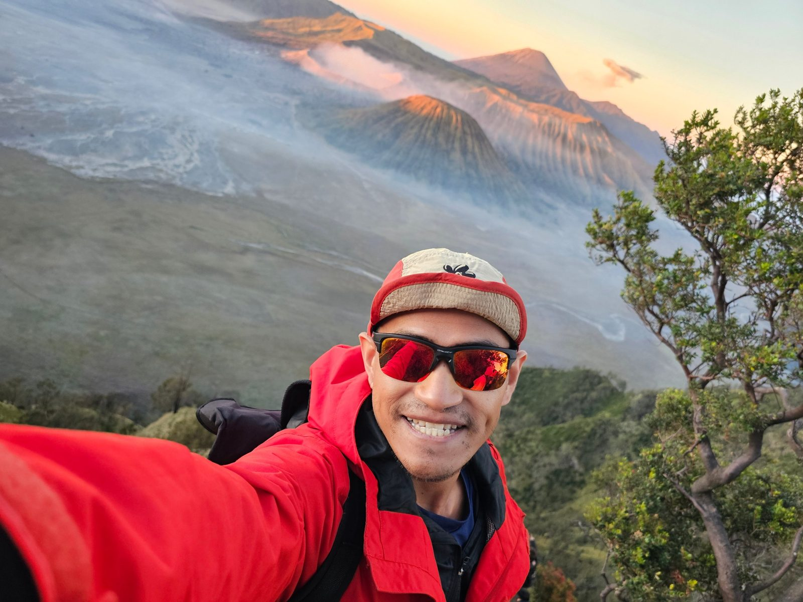
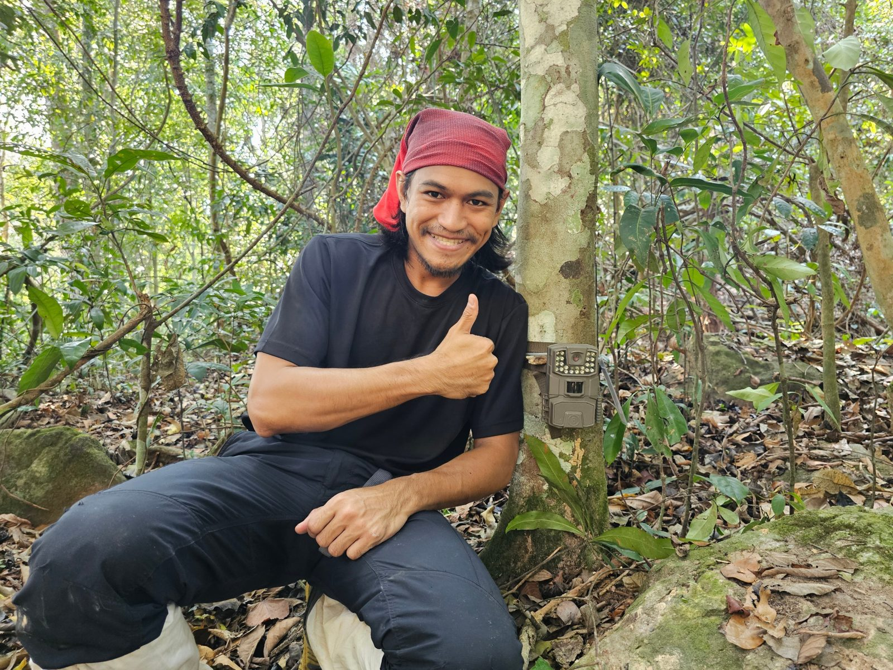
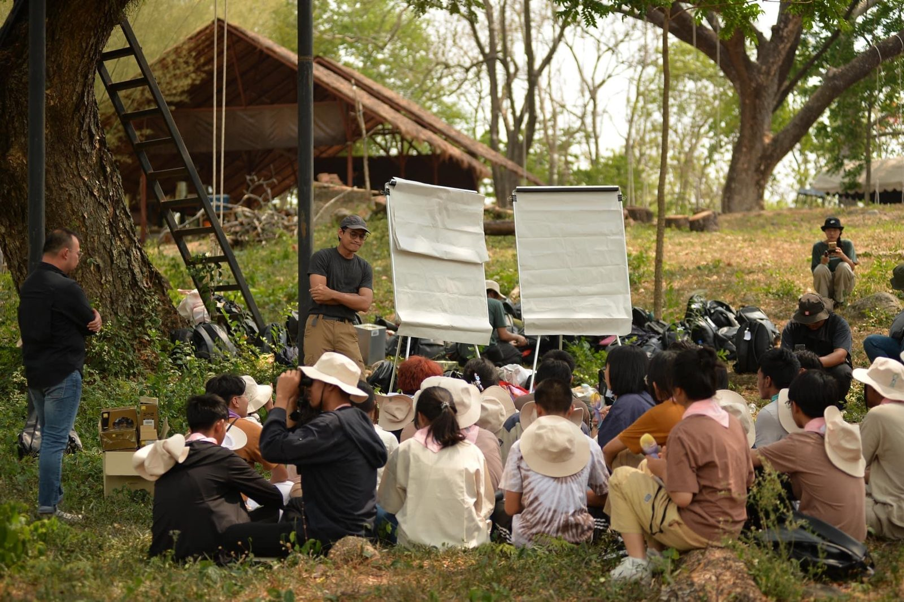

Ph.D. Student · Wildlife Biology & Management
I'm Andaman Chankhao, a Ph.D. student in Forestry at Kasetsart University and an Assistant Lecturer at Mahidol University. I study forage, the plants large herbivores depend on, in Thailand's seasonally dry forests, combining permanent field plots with satellite remote sensing.

01 — Research

Seasonally dry forests change sharply between wet and dry seasons, and so does the food available to large herbivores. My work measures how forage quantity and quality shift through the year, and maps them across the landscape so protected-area managers can plan habitat and buffer zones.
My doctoral research follows long-term forage dynamics in dipterocarp forest using permanent forest plots, and scales them up with Sentinel-1 radar, Sentinel-2 optical imagery and ensemble machine learning. I'm especially interested in plant–animal interactions and human–wildlife conflict, which are still little studied in Thailand.
02 — Field sites
03 — Research projects
04 — Publications
05 — Teaching

Assistant Lecturer, Faculty of Environment and Resource Studies, Mahidol University (since July 2023).
06 — Education
Ph.D. in Forestry, Wildlife Biology and Management
Department of Forest Biology, Kasetsart University
M.S. in Forest Biological Science, Wildlife Biology and Management
Kasetsart University · Graduate School Fellowship
B.S. in Forestry, Wildlife and Range Management
Kasetsart University
Certificates
Open to collaboration, fieldwork and conversations in Thai or English.